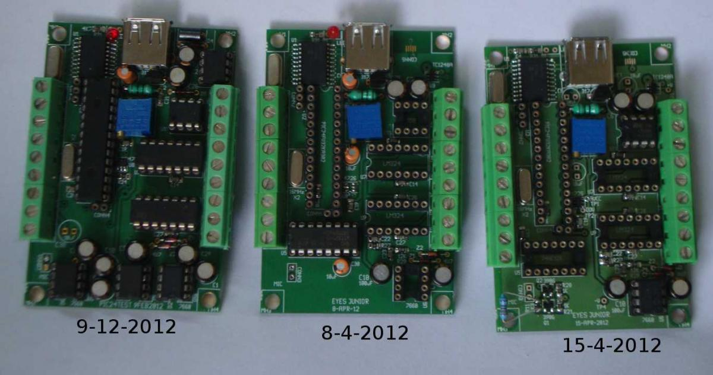

Nov-2011: expEYS was released in Mar-2011 and is doing reasonably well. There was no plan to develop another version.
6-Nov-2011 : Prabhu,s mail ..Looking forward to seeing you at SciPy.in 2011.
4-Dec-2011 : Gave a demo of expEYES at Scipy.in 2011
5-Dec-2011 : Met Prof. Kannan Moudgalya and gave a demo expEYES.
9-Dec-2011 : Prof. Kannan arranged meeting with N K Sinha, Director of NMEICT project, MHRD. Talked about the possibility of using expEYES with the Akash tablet PC. Shri Sinha wanted something costing only few hundred rupees. Also gave a demo at their committee meeting. Submitted a proposal to NMEICT for some human resource to conduct expEYES training programs and attended meeting on 26-Dec-11.
Even though no Android version of expEYES made, the idea of a very low cost device came up. I decided to explore the options for lowering the cost further. A design using Atmega328, from Atmel Corp., was made, using built-in 10 bit ADC and PWM DAC. PCB size reduced to 9mm x6 mm
29-Dec-11 : PCB sent for fabrication.
3-Jan-12 : Sent another version of PCB for fabrication. To reduce size, it replaced TC7660 with TC1240A voltage doubler.
12-Jan-12 : Went back to TC7660 since one of the TC1240A failed during continuous testing, keeping both versions.
Tested by writing the required C and Python programs, like CRO.

Started looking for micro-controllers with built-in USB, 12bit ADC and 2k RAM. Found PIC18F2458, from Microchip Inc., having both. After contacting Microchip, it was realised that the built-in USB cannot be used simultaneously with the real-time measurements required. Changed to PIC18F25KA80 + MCP2200 combination. Vinod & Pramode did ADC & UART testing of PIC18F2458. Almost decided to go for a PIC controller.
29-Jan-12 : Sent the PIC based PCB for fabrication. The memory bank switching found too slow for C code filling large arrays. The uC architecture doesn't look very C compiler friendly. Searched, with inputs from Pramode CE, for a 16 bit version satisfying the requirements, found PIC24FV32KA302. Supported by gcc.
31-Jan-12 : Attended the Technical Training Seminar by Microchip. Fortunately Microchip released development tools, MPLABX, for GNU/Linux also.
9-Feb-12 : Sent PIC24 uC based PCB for fabrication.
18-Feb-12 : Received PICKIT3 programmer and PIC24FV32KA302 chips. Surface mount package was ordered by mistake, instead of DIP, but tested them using PICKIT3 somehow. Started testing the PCB from the beginning of Mar-12, facing problems mostly due to lack of familiarity with PIC uCs. Thanks to the cooperation from Microchip things are getting sorted out. Solving a UART error took days, to realize that the watchdog timer is enabled by default.
13-Mar-12: Transmitted 1 million blocks, of 256bytes, from uC to PC without any error. ADC seems to be at par with the MCP3208 used in expEYES.
20-Mar-12 : C language code failed to meet the 100 ksamples/sec rate for ADC blockread. Started learning PIC24 assembly language, great help from the online book by Robert Reese, Bryan Jones and J. W. Bruce.
26-Mar-12: With assembler code ADC blockread giving 250 ksample/sec sampling rate, Timer1 ISR is used. Tested single channel block reads by capturing and fitting sine wave.
1-Apr-2012: Received a mail from Myra Vanlnwegen, education coordinator for the Raspberry Pi Foundation, asking whether expEYES work with Raspberry Pi. Requested her to send one Rpi board.
5-Apr-12 : Time measurement routines are almost done. A numbering scheme is worked out to make the functions more generic. A CRO program is running now.
7-Apr-12: Again some changes in hardware. Decided to provide only one amplifier. A digital output other that SQRs, all using a CMOS buffer IC. Introduced TC1240A after some continuous testing.
8-Apr-12: Having trouble with Charge Time Measurement Unit of PIC micro. A = 5.5 uA, 48.6 uA & 451 uA in 3 different ranges, measured using DMM. With 10x CRO probe connected V =1.25 after feeding 5.5 uA for 10 usecs. Error reported but no solution yet.
18-Apr-2012: The Rpi board arrived. Help for testing came from Alex Bradbury.
20-Apr-2012: expEYES tested on Rpi. Everything is fine except a USB error that allows only keyboard or mouse along with expEYES. Bug report filed.
1-May-2012: A serial port version of expEYES has been developed for Rpi. Communication tested between uC and Rpi. The PCB has been send for fabrication.
9-May-12: Did several iterations of prototyping. Added a 1mA constant current source with ON/OFF control. Firmware almost done. Wrote a CRO program with extra features. Drawings of the plastic shell given for making the mould. Almost getting ready for production.
16-May-12 : expEYES was announced on Raspberry Pi webpage. Getting resonably good feedback and enquiries about availability. Planning to make USB & Serial version (for Rpi), both having almost identical layout.
17-May-12 : Started testing and documenting experiments for the new model. Modifying firmare and Python code whereever required. Some modifications are done to the hardware also. Trying to reach the final PCB at the earliest.
23-May-12: The first lot of PBCs send for fabrication, asked the vendor in Delhi to start making some sample pieces. Stopped work for two weeks, programs at JIT, Coimbatore and NIT, Calicut.
7-Jun-2012: Started writing software and documentation. A CRO program with some extra features was done first. By end of June several boards were assembled. Some minor changes to the PCB. The read back of Square waves shifted to the after the buffer. Series resistors added to A1 and A2 inputs after level shifting. Got the plastic cabinets.

1-Jul-2012: Final PCB send for fabrication.
16-Jul-2012: Units send to Pramode & Georges, for testing.
2-Aug-2012: Finished Software and a User Manual describing around 50 experiments are ready. Website update and videos are pending.
ExpEYES Junior is ready. Photograph below shows capturing sound from a Piezo Buzzer.
20-Aug-2012: First lot of commercial production started.